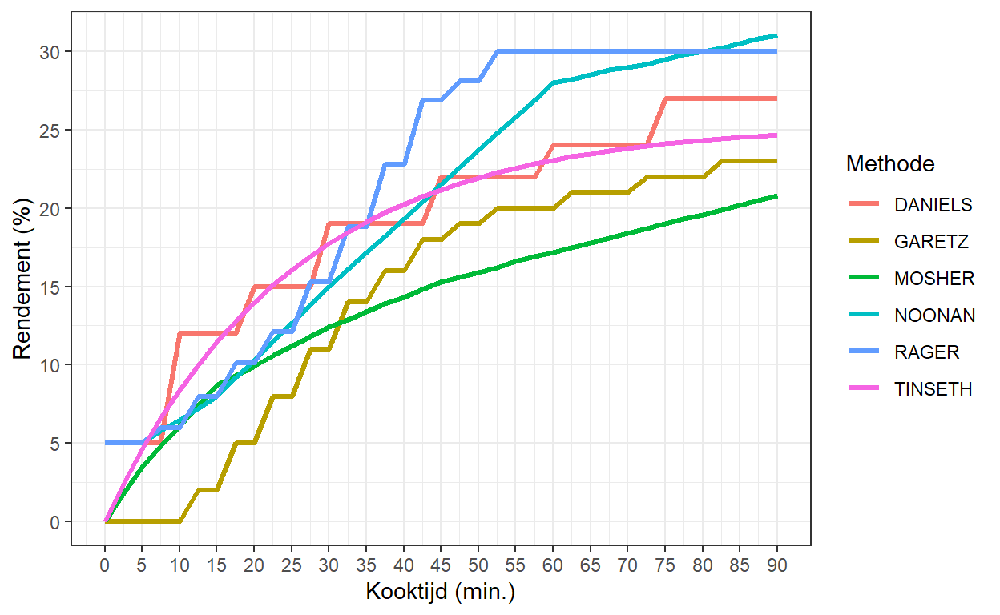

Welkom op de website van Vlearmoesbier.

Relatie tussen de hopbitterheid en de kooktijd.
Manieren om de bitterheid van hoptoevoegingen in bier te bepalen.
Alfazuurwaarden van hopoogst 2010-2019.
De Amerikaanse BJCP biertypenlijst in een Excel bestand.
Hoe je invertsuiker kunt maken.
Meeteenheden voor het stamwortgehalte.
Recept van Sierra Nevada voor ondersteuning slachtoffers bosbranden.
De BKG biertypenlijst in een Excel bestand.
Manieren om aan een recept te komen.